Chapter 7
Networks
7.1 Network Data
7.1.1 Tidygraph: A tidy network manipulation API
I demonstrate an example to import a .json file using the Star Wars Social Networks data from here (Gabasova 2016). Then, I manipulate the data using tidygraph and tidyverse functions.
- Creating a
tbl_graphobject (tidygraph) (Pedersen 2023) from a .json file usingjsonlitepackage. (Ooms 2014).
Code
# The url for the data
url <- "https://raw.githubusercontent.com/evelinag/star-wars-network-data/master/starwars-full-interactions.json"
# Importing json data
starwars <- jsonlite::read_json(url, simplifyVector = TRUE)
# Getting the nodes (i.e., Star-Wars characters)
sw_nodes <- starwars[[1]] |>
as_tibble() |>
# An id to match nodes and links
mutate(id = row_number()) |>
relocate(id) |>
# Conventional naming
rename(
firstname = name,
name = id
)
# Getting the links (i.e. connections between characters)
sw_links <- starwars[[2]] |>
as_tibble() |>
# Network Graphs Tidygraph does not recognize 0 as a node, so adding 1.
mutate(
source = source + 1,
target = target + 1
) |>
# Conventional Naming
rename(
from = source,
to = target,
weightage = value
)
# Creating a tbl_graph object
sw_graph <- tbl_graph(
nodes = sw_nodes,
edges = sw_links,
node_key = "name",
directed = FALSE
)
sw_graph# A tbl_graph: 110 nodes and 398 edges
#
# An undirected simple graph with 2 components
#
# A tibble: 110 × 4
name firstname value colour
<int> <chr> <int> <chr>
1 1 QUI-GON 61 #4f4fb1
2 2 NUTE GUNRAY 24 #808080
3 3 PK-4 3 #808080
4 4 TC-14 4 #808080
5 5 OBI-WAN 147 #48D1CC
6 6 DOFINE 3 #808080
# ℹ 104 more rows
#
# A tibble: 398 × 3
from to weightage
<int> <int> <int>
1 1 2 1
2 3 4 1
3 4 5 1
# ℹ 395 more rows7.1.3 Algorithms
The real benefit of tbl_graph data is that we can do many operations on them, while preserving the underlying structure, for example: centrality calculation, ranking, grouping, etc.
Finding groups within Star Wars Characters using group_leading_eigen() which groups nodes based on the leading eigenvector of the modularity matrix using igraph::cluster_leading_eigen() . The variable col_var shows the group, which can be used to create groups.
sw_graph <- sw_graph |>
# Creating groups with group_leading_eigen()
activate(nodes) |>
mutate(col_var = tidygraph::group_leading_eigen())The group_leading_eigen() creates groups, and as we can see below in Figure 1 , the groups are of related characters who appear often together in the movie.
Code
sw_graph |>
activate(nodes) |>
as_tibble() |>
select(col_var, firstname, value) |>
mutate(
Group = paste0("Gp. ", col_var),
firstname = snakecase::to_title_case(firstname)
) |>
group_by(Group) |>
arrange(desc(value)) |>
summarise(Characters = paste(firstname, collapse = ", ")) |>
gt::gt() |>
gtExtras::gt_theme_espn()| Group | Characters |
|---|---|
| Gp. 1 | Obi Wan, Emperor, Yoda, Nute Gunray, Bail Organa, Mace Windu, General Grievous, Rune, Count Dooku, Sio Bibble, Lama Su, Ki Adi Mundi, Darth Maul, Jango Fett, Tc 14, Tey How, General Ceel, Odd Ball, Clone Commander Gree, Clone Commander Cody, Pk 4, Dofine, Valorum, Senator Ask Aak, Orn Free Taa, Sun Rit, Poggle, Plo Koon, Tion Medon, Rabe |
| Gp. 2 | Anakin, Padme, Qui Gon, Jar jar, Captain Panaka, Ric Olie, Shmi, Fode Beed, Owen, Watto, Jabba, Captain Typho, Bravo Two, Boss Nass, Kitster, Ruwee, Tarpals, Sebulba, Jira, Wald, Greedo, Bravo Three, Sola, Jobal, Cliegg, Fang Zar, Giddean Danu |
| Gp. 3 | Luke, C 3 Po, Leia, Lando, Red Leader, Wedge, Biggs, Gold Leader, Admiral Ackbar, Red Ten, Rieekan, Beru, Zev, Mon Mothma, Dack, Janson, Captain Antilles, Camie, Dodonna, Derlin, Bib Fortuna, Boushh |
| Gp. 4 | Han, Finn, Rey, Poe, Kylo Ren, General Hux, Captain Phasma, Maz, Unkar Plutt, Snap, Lor San Tekka, Bala Tik, Snoke, Ello Asty, Jess, Lieutenant Mitaka, Admiral Statura, Yolo Ziff, Colonel Datoo, Niv Lek, Bb 8 |
| Gp. 5 | Darth Vader, Tarkin, Piett, Boba Fett, Taun We, Motti, Ozzel, Needa, Jerjerrod |
| Gp. 6 | Gold Five |
7.2 Visualizing Networks
We can use the tbl_graph object with ggraph to create visualizations easily.
- In Figure 2, we are visualizing Networks amongst most important characters (imporantance determined by >40 appearances in scenes). As we can see, out
tidygraphfunctiongroup_leading_eigen()has successfully group the characters into groups, based on their interactions.
Code
sw_graph |>
activate(nodes) |>
filter(value > 40) |>
ggraph(layout = "stress") +
geom_edge_link(
mapping = aes(width = weightage),
alpha = 0.5,
color = "grey"
) +
geom_node_point(
mapping = aes(size = value,
colour = as.factor(col_var))
) +
geom_node_text(
mapping = aes(label = firstname),
check_overlap = TRUE,
repel = TRUE
) +
scale_size_area(max_size = 10) +
scale_colour_brewer(palette = "Dark2") +
theme_void() +
theme(legend.position = "none")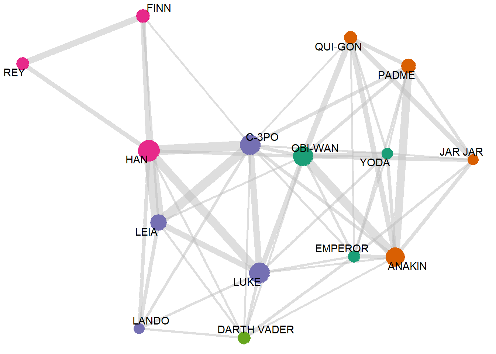
- Below, we trying out different layouts in Figure 3 using the argument
layout = ""to the functionggraph(). Theggraphprovides well over 20 different layouts1 to choose from, including (Credits:RDocumentation forlayout_tbl_graph_igraph): —
-
Hierarchical layouts
tree: Uses the Reingold-Tilford algorithm to place the nodes below their parent with the parent centered above its children.sugiyama: Designed for directed acyclic graphs (that is, hierarchies where multiple parents are allowed) it minimizes the number of crossing edges.
-
Standard layouts
bipartite: Minimize edge-crossings in a simple two-row (or column) layout for bipartite graphs.star: Place one node in the center and the rest equidistantly around it.circle: Place nodes in a circle in the order of their index. Consider using layout_tbl_graph_linear() with circular=TRUE for more control.nicely: Tries to pick an appropriate layout. See igraph::nicely() for a description of the simple decision tree it usesdh: Uses Davidson and Harels simulated annealing algorithm to place nodes.gem: Place nodes on the plane using the GEM force-directed layout algorithm.graphopt: Uses the Graphopt algorithm based on alternating attraction and repulsion to place nodes.grid: Place nodes on a rectangular grid.mds: Perform a multidimensional scaling of nodes using either the shortest path or a user supplied distance.sphere: Place nodes uniformly on a sphere - less relevant for 2D visualizations of networks.randomly: Places nodes uniformly random.fr: Places nodes according to the force-directed algorithm of Fruchterman and Reingold.kk: Uses the spring-based algorithm by Kamada and Kawai to place nodes.drl: Uses the force directed algorithm from the DrL toolbox to place nodes.lgl: Uses the algorithm from Large Graph Layout to place nodes.
Code
sw_graph_fun <- function(my_layout){
sw_graph |>
activate(nodes) |>
filter(value > 40) |>
ggraph(layout = my_layout) +
geom_edge_link(
mapping = aes(width = weightage),
alpha = 0.5,
color = "grey"
) +
geom_node_point(mapping = aes(size = value,
col = as.factor(col_var))) +
geom_node_text(
mapping = aes(label = firstname),
check_overlap = TRUE,
repel = TRUE,
fontface = "bold"
) +
labs(title = paste0("layout = \"", my_layout, "\"")) +
scale_size_area(max_size = 10) +
theme_void() +
theme(
legend.position = "none",
plot.title = element_text(
face = "bold",
family = "mono",
size = 20,
hjust = 0
)
)
}
sw_graph_fun("drl")
sw_graph_fun("circle")
sw_graph_fun("nicely")
sw_graph_fun("dh")
sw_graph_fun("gem")
sw_graph_fun("graphopt")
sw_graph_fun("grid")
sw_graph_fun("kk")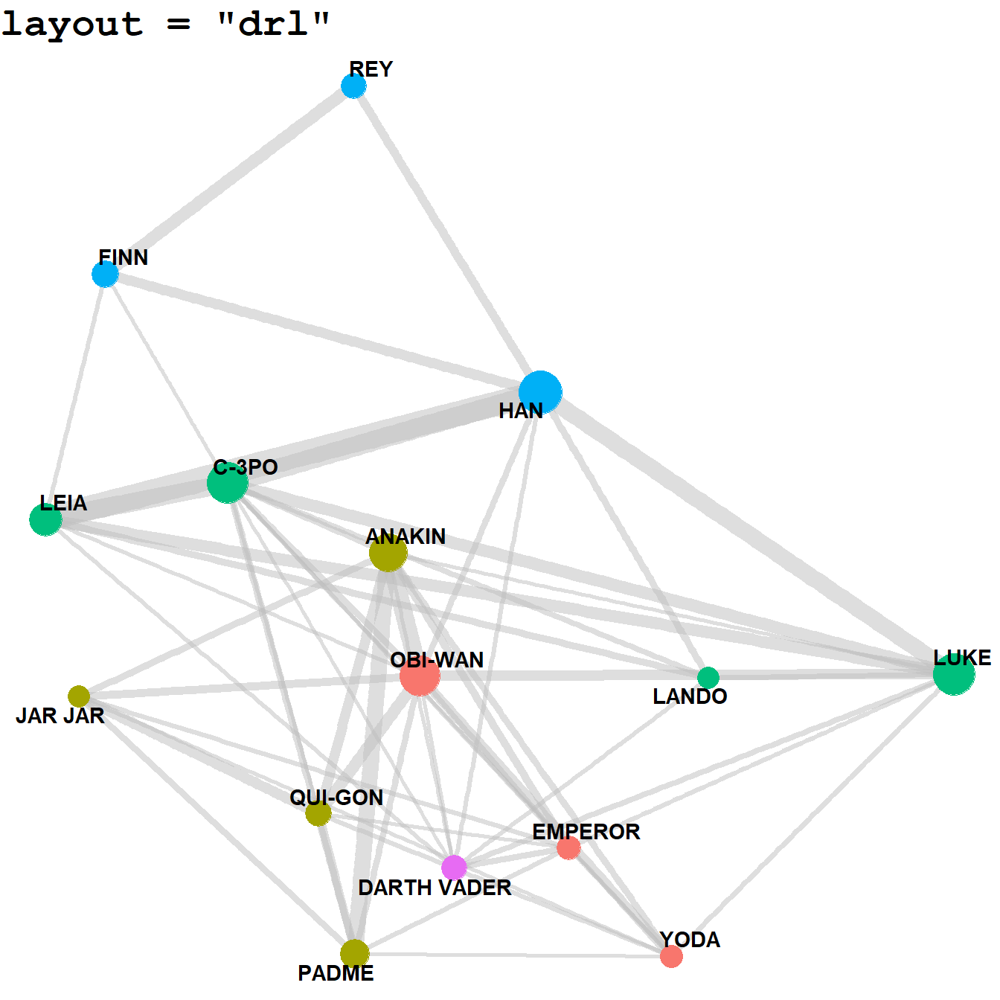
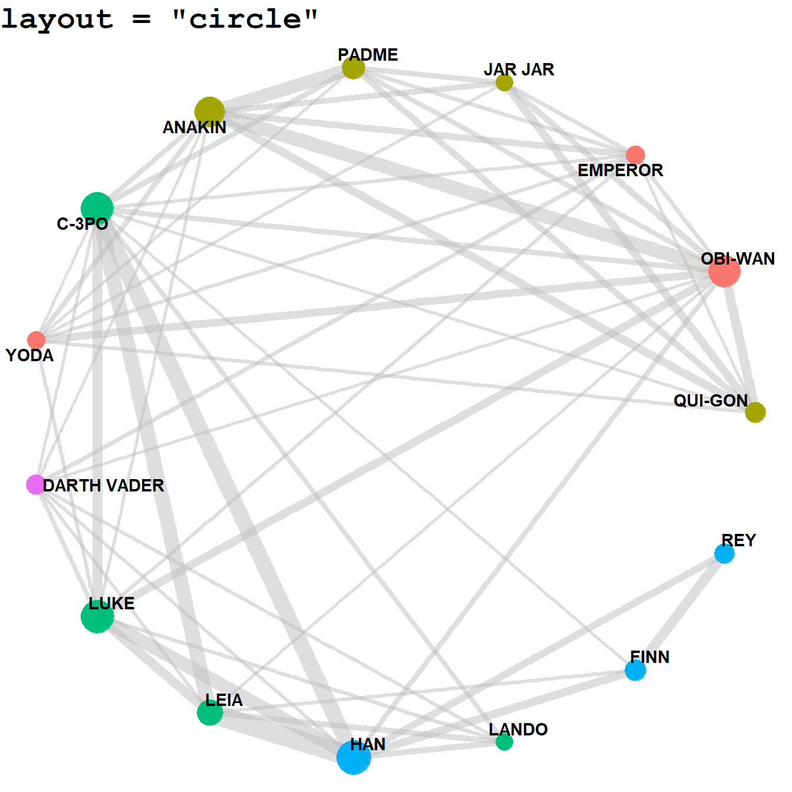
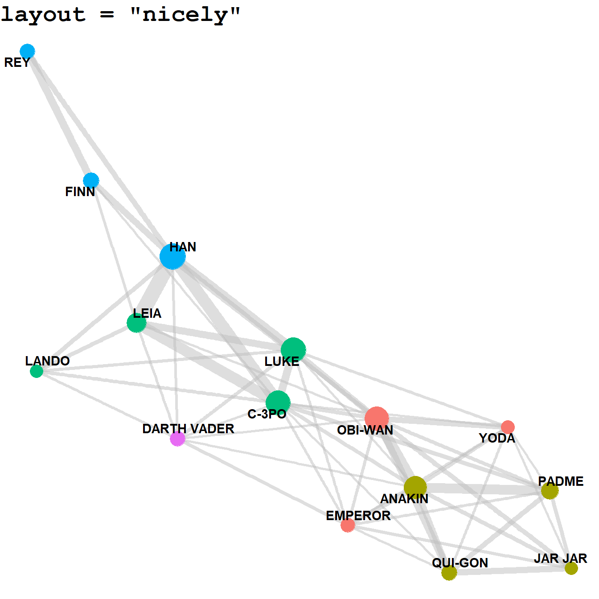
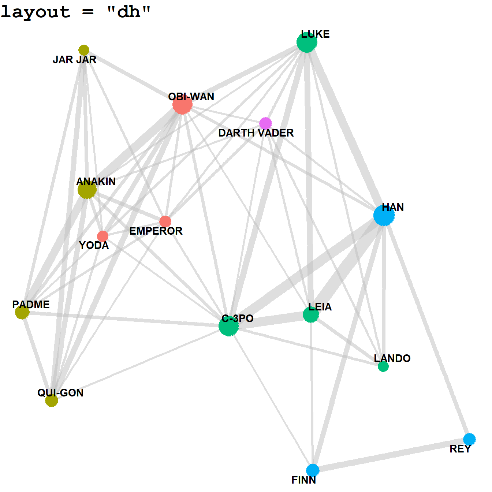
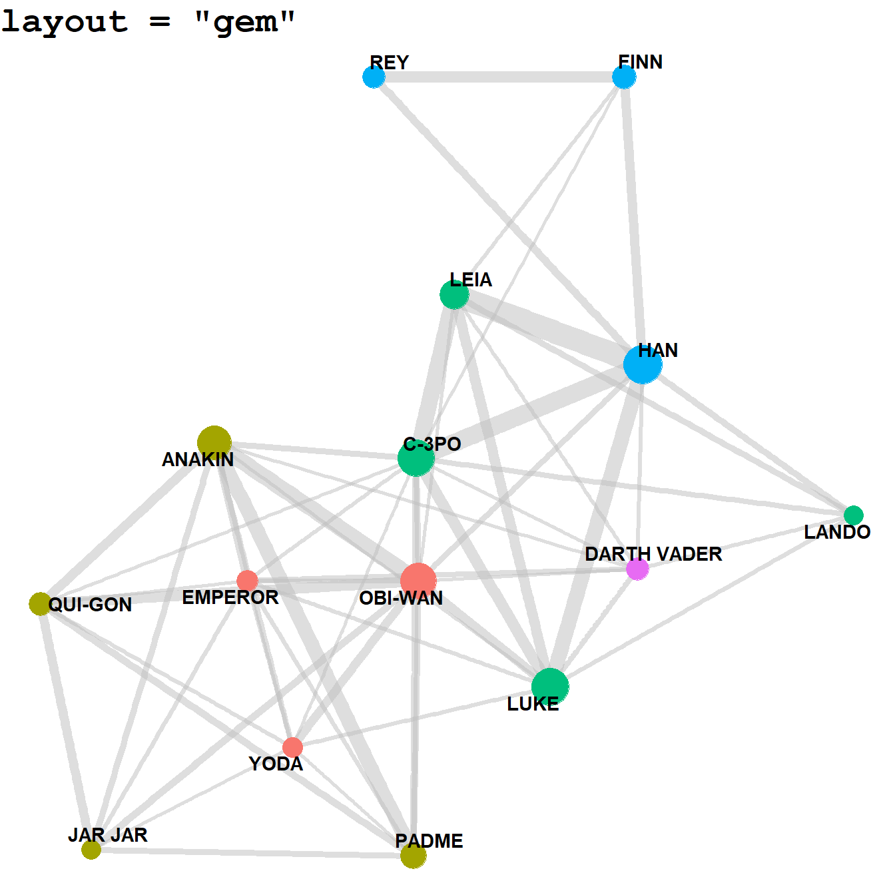
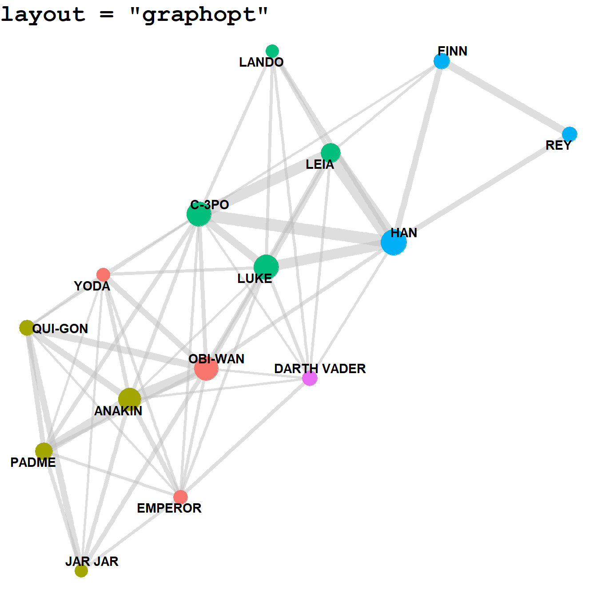
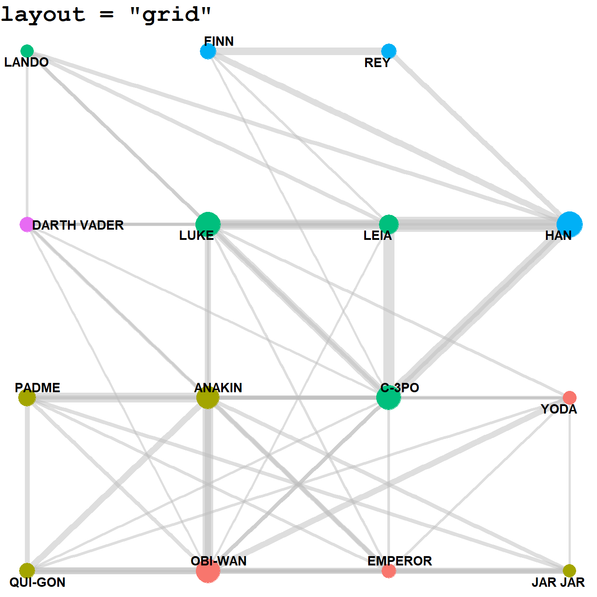
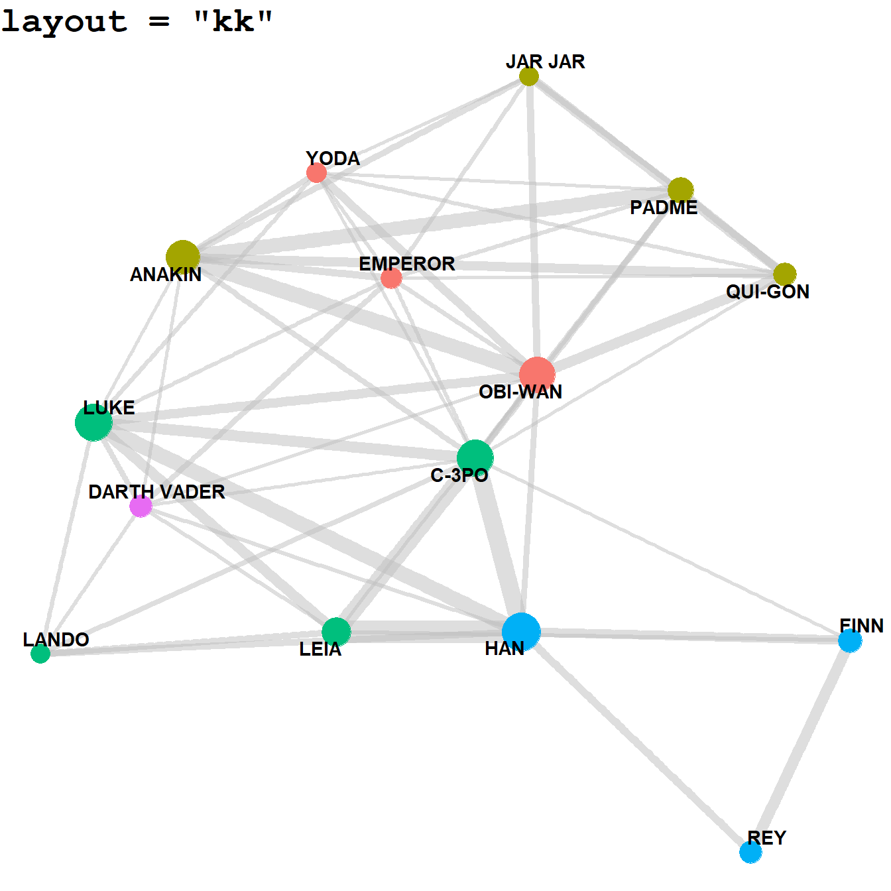
- We can further customizing Edge-widths, curvature and colours to represent strength of links between the nodes using
ggraph, as depicted in Figure 4.
Code
sw_graph |>
activate(nodes) |>
mutate(col_var = as.character(col_var)) |>
filter(value > 40) |>
# Start plotting network graph
ggraph(layout = "nicely") +
# Edges
geom_edge_bend2(
aes(
colour = node.col_var,
width = weightage
),
lineend = "round"
) +
# Nodes
geom_node_point(
aes(
size = value,
fill = col_var
),
pch = 21,
colour = "white",
stroke = 2
) +
# Labels
geom_node_text(
aes(label = firstname),
check_overlap = TRUE,
repel = TRUE,
fontface = "bold"
) +
scale_size_area(max_size = 15) +
theme_void() +
theme(
legend.position = "none",
plot.title = element_text(
face = "bold",
size = 15,
hjust = 0.5
)
)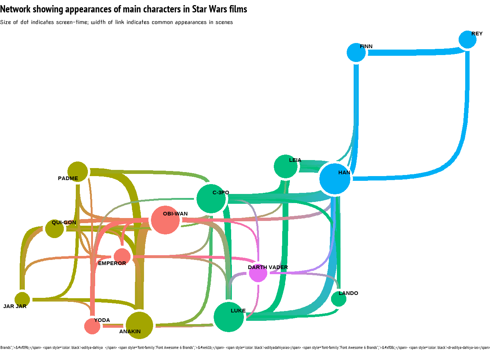
- Faceting: Lastly, we can also facet on the nodes or on the edges, and produce multiple network graphs, as shown in Figure 5 for the entire Star Wars cast (not just the most important characters): —
Code
library(showtext)
library(fontawesome)
font_add_google("Poller One",
family = "font_sw")
showtext_auto()
labels_facet = c(
"Jedi & Sith Lords",
"Prequel Trilogy",
"Original Trilogy",
"Sequel Trilogy",
"Villains",
"An outlier!"
)
labels_facet <- str_to_upper(labels_facet)
names(labels_facet) = 1:6
sw_graph |>
activate(nodes) |>
mutate(firstname = snakecase::to_title_case(firstname)) |>
ggraph() +
geom_edge_link(
mapping = aes(width = weightage),
alpha = 0.5,
color = "grey"
) +
geom_node_point(
aes(size = value,
col = as.factor(col_var))) +
geom_node_text(
aes(label = firstname,
size = value),
repel = TRUE
) +
scale_size_area(max_size = 10) +
scale_size_continuous(range = c(6, 15)) +
scale_color_brewer(palette = "Set2") +
facet_nodes(~ col_var,
scales = "free",
labeller = as_labeller(labels_facet),
ncol = 2) +
theme_void() +
theme(
legend.position = "none",
strip.text = element_text(
family = "font_sw",
hjust = 0.5,
size = 36
),
panel.border = element_rect(colour = "darkgrey",
fill = NA),
strip.background = element_rect(colour = "darkgrey",
fill = NA)
)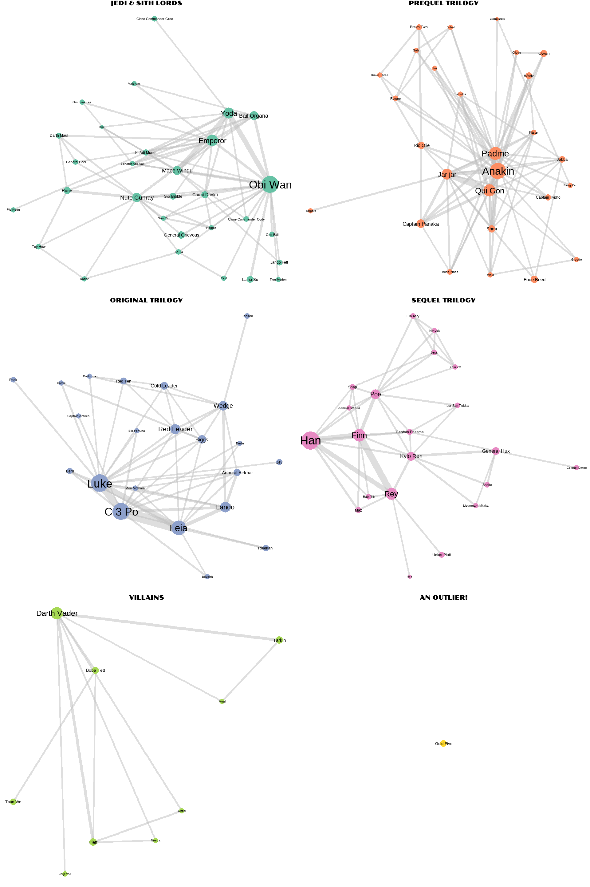
References
Footnotes
The layouts have been picked up (copied) from RDocumentation webpage:
ggraph(version 2.1.0)layout_tbl_graph_igraph: usingigraphlayout algorithms forlayout_tbl_graph↩︎